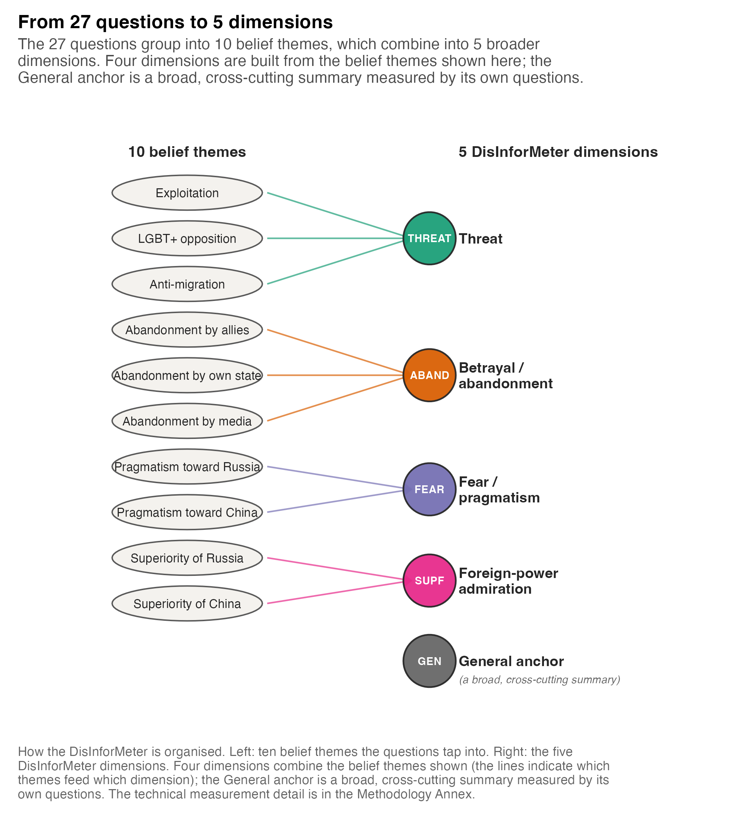
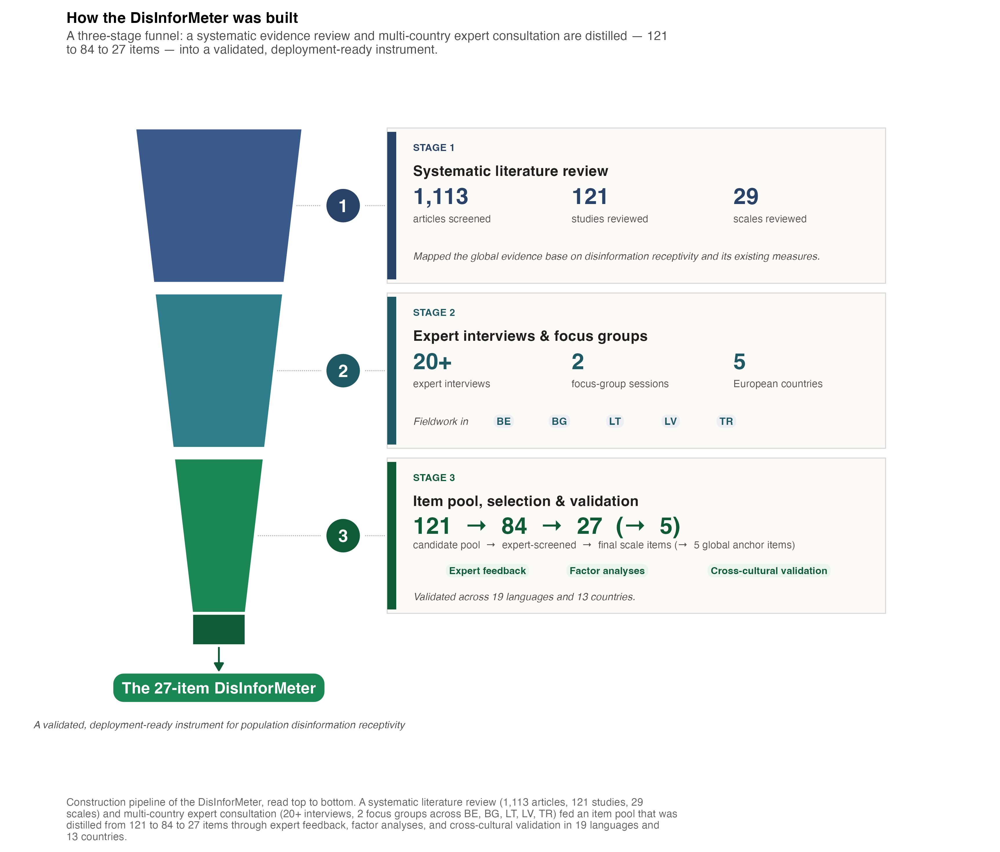

Constructs, full items & short form
The complete measured item bank, the recommended module to field in future waves, and a plain-language construct dictionary
Why this page exists
The policy report has no room to print the instrument itself. Yet the single most useful thing a survey or media authority can take from this work is the exact wording of what to ask. This page therefore documents the DisInforMeter in full: the construct architecture, every item with complete English wording and the wave(s) in which it was fielded, the recommended short module to field in upcoming data-collection waves, and a plain-language dictionary of every construct.
ImportantScoring direction (applies to everything below)
DisInforMeter domain items are scored so that higher = more receptivity-relevant endorsement. The FIMI items are scored so that higher = better detection of foreign manipulation (1 = certainly not manipulated → 7 = certainly manipulated). The two sides run in opposite directions and must not be averaged together.
Construct architecture
The instrument separates five receptivity-relevant domains from the FIMI detection criterion. Each higher-order domain aggregates narrower first-order belief blocks; the criterion is kept analytically separate so that detection and receptivity can be related rather than confounded (StephanYbarraMorrison2009?; OECD2017Trust?; AkkermanMuddeZaslove2014?).
| Domain | What it captures | Policy use |
|---|---|---|
| Threat | Perceived threat to national identity, security, culture, sovereignty, or social order. | Identifies where FIMI may resonate through danger, loss, or value-erosion frames. |
| Betrayal / Abandonment | Perceived failure of domestic institutions, allies, or mainstream information institutions to protect citizens. | Connects FIMI receptivity to institutional-trust, grievance, and civic-efficacy evidence. |
| Fear / Pragmatism | Anxiety-driven openness to accommodation with hostile or rival powers as a route to safety. | Separates fear-based accommodation narratives from admiration-based ones. |
| Foreign-Power Admiration | Positive affect toward Russia, China, or alternative geopolitical models. | Flags affinity-based receptivity, especially where source identity matters. |
| General Anchor | Cross-cutting affective stance toward protection, external threats, and rival powers. | Provides a broad monitoring signal while preserving domain-level interpretation. |
The instrument was not written as a single questionnaire exercise. It was built through a staged evidence pipeline — conceptual work, item generation and harmonisation, empirical refinement, cross-national comparability checks, and external validation — summarised in the construction funnel below (DeVellis2017?; BoatengEtAl2018?; ClarkWatson1995?).

The full measured item bank
The tables below list every item carried in the DisInforMeter programme with its complete English wording, grouped by construct. Each per-wave column gives the canonical variable name used in the wrangled item-level exports (data/wrangled_data/study{1..5}_items.parquet), so an entry is directly addressable in the data; a dash (—) marks an item not administered that wave. The machine-readable master map is downloadable below.
Items were harmonised across waves. S3 substitutes “Germany” / “our country” for “Lithuania” in three immigration / ethnocentrism items; S5 returns to the Lithuanian wording. S4 deliberately fields a compressed affective predictor set for the cross-national experiment (see the short module below), which is why many first-order blocks show a dash in the S4 column.
First-order belief blocks
| Item (full English wording) | S1 | S2 | S3 | S4 | S5 |
|---|---|---|---|---|---|
| Exploitation | |||||
| We are unable to use our nation’s greatest potential because foreign countries are exploiting us. | poi3 | exp1 | exp1 | — | exp1 |
| Foreign countries are exploiting our nation’s resources. | exp2 | exp2 | exp2 | — | exp2 |
| Western civilization is characterized by materialism and exploitation of others. | exp3 | exp3 | exp3 | — | exp3 |
| Globalization poses a big threat to our statehood and national identity. | exp4 | exp4 | exp4 | — | exp4 |
| Over the past decades, moral values have declined due to Western influence. | dec1 | exp5 | exp5 | — | exp5 |
| We have become puppets of Brussels. | exp1 | — | — | — | — |
| LGBT+ Opposition | |||||
| We should protect and enforce traditional gender roles. | lgbt1 | lgb1 | lgb1 | — | lgb1 |
| The LGBT+ movement is a threat to our values. | lgbt2 | lgb2 | lgb2 | — | lgb2 |
| LGBT+ rights promotion is a disguised form of colonization. | lgbt3 | lgb3 | lgb3 | — | lgb3 |
| We should ban LGBT+ propaganda like countries as Russia or Belorussia did. | lgbt4 | lgb4 | lgb4 | — | lgb4 |
| We should immediately stop promoting leftist, woke gender ideology. | — | lgb5 | lgb5 | — | lgb5 |
| We should acknowledge biological reality that only two genders exist – male and female. | — | lgb6 | lgb6 | — | lgb6 |
| Immigration | |||||
| The EU is unable to handle immigration. | unp3 | mi1 | mi1 | — | mi1 |
| Immigrants are changing Europe for the worse. | unp4 | mi2 | mi2 | — | mi2 |
| We should adopt a much harder line against immigration. | — | mi3 | mi3 | — | mi3 |
| Immigrants take advantage of our country. | — | mi4 | mi4 | — | mi4 |
| We should deport all immigrants to where they came from. | — | mi5 | mi5 | — | mi5 |
| Immigrants are responsible for many of my country's biggest problems. | — | mi6 | mi6 | — | mi6 |
| Foreigners do not belong in Lithuania. | — | mi7 | mi7 | — | mi7 |
| Unprotected by international allies | |||||
| EU is weak and has no power. | unp1 | unp1 | unp1 | — | unp1 |
| NATO will not be brave enough to defend our nation in case of military conflict. | unp5 | unp2 | unp2 | — | unp2 |
| NATO will betray us like Ukraine has been betrayed. | unp6 | unp3 | unp3 | — | unp3 |
| NATO has expanded too much and will be torn apart by internal conflicts. | unp8 | unp4 | unp4 | — | unp4 |
| The influence of the USA in the world is getting weaker and weaker. | unp2 | — | — | — | — |
| We should quit NATO as NATO membership poses a great threat to our nation. | unp7 | — | — | — | — |
| Abandoned by own state | |||||
| My state has abandoned its citizens. | aban1 | aban1 | aban1 | — | aban1 |
| My state is exploiting its citizens. | aban2 | aban2 | aban2 | — | aban2 |
| My state is a failed state. | aban3 | aban3 | aban3 | — | aban3 |
| I don't feel that my state takes good care of me. | aban4 | aban4 | aban4 | — | aban4 |
| My state is not able to ensure jobs and fair income for everyone. | aban5 | aban5 | aban5 | — | aban5 |
| I feel anger towards specific politicians who made our daily lives worse. | aban6 | — | — | — | — |
| I feel outraged with specific politicians who have failed us. | aban7 | — | — | — | — |
| I possess information on how specific politicians worked against our statehood. | aban8 | — | — | — | — |
| Abandoned by media (censorship) | |||||
| My state is censoring access to truthful information. | — | cen1 | cen1 | — | cen1 |
| My state is supporting media you cannot trust. | — | cen2 | cen2 | — | cen2 |
| My state actively restricts my freedom of opinion. | — | cen3 | cen3 | — | cen3 |
| All mainstream media are lying to us. | cens1 | cen4 | cen4 | — | cen4 |
| Mainstream media are trying to brainwash citizens of my country. | — | cen5 | cen5 | — | cen5 |
| Mainstream media are useless in providing truthful and accurate information. | — | cen6 | cen6 | — | cen6 |
| Pragmatism — Russia | |||||
| It is a mistake that we are not allowed to collaborate with such states as Russia. | prag_ru1 | pru1 | pru1 | — | pru1 |
| Countries like Ukraine should finally start building good relations with Russia. | prag_ru2 | pru2 | pru2 | — | pru2 |
| We should not become enemies with countries like Russia. | prag_ru3 | pru3 | pru3 | — | pru3 |
| The West should not behave aggressively towards countries like Russia. | prag_ru4 | pru4 | pru4 | — | pru4 |
| Countries like Russia never attack without being provoked. | prag_ru5 | pru5 | pru5 | — | pru5 |
| Russia is like a sleeping bear that we should not wake up. | prag_ru6 | pru6 | pru6 | — | pru6 |
| Pragmatism — China | |||||
| It is a mistake that we are not allowed to collaborate with states such as China. | prag_kin1 | pch1 | pch1 | — | pkin1 |
| Taiwan should finally stop provoking China. | prag_kin2 | pch2 | pch2 | — | pkin2 |
| We should not become enemies with countries like China. | prag_kin3 | pch3 | pch3 | — | pkin3 |
| The West should not behave aggressively towards countries like China. | prag_kin4 | pch4 | pch4 | — | pkin4 |
| Countries like China never attack without being provoked. | prag_kin5 | pch5 | pch5 | — | pkin5 |
| China is like a sleeping dragon that we should not wake up. | prag_kin6 | pch6 | pch6 | — | pkin6 |
| Superiority — Russia (beliefs) | |||||
| Russia has an important historic mission. | sup_ru1 | sru1 | sru1 | — | sru1 |
| Russia will reemerge as the most powerful nation in the world. | sup_ru2 | sru2 | sru2 | — | sru2 |
| Russia is technologically advanced. | sup_ru3 | sru3 | sru3 | — | sru3 |
| Russia has innovative military technologies. | sup_ru4 | sru4 | sru4 | — | sru4 |
| Russia represents a unique Slavic civilization. | sup_ru6 | sru5 | sru5 | — | sru5 |
| Russian culture is a superior culture. | sup_ru7 | sru6 | sru6 | — | sru6 |
| Russia is the last bastion of anti-systemic and anti-global forces in Europe. | sup_ru8 | sru7 | sru7 | — | sru7 |
| Russia is able to defend its core values. | sup_ru9 | sru8 | sru8 | — | sru8 |
| Russia is able to take good care of its citizens. | sup_ru10 | sru9 | sru9 | — | sru9 |
| Russia has a unique spiritual potential. | sup_ru11 | sru10 | sru10 | — | sru10 |
| Russia draws its strength from its places of spiritual importance. | sup_ru13 | sru11 | sru11 | — | sru11 |
| Russia will protect us if needed. | — | sru12 | sru12 | — | sru12 |
| Russian hackers are able to hack any institution in the world. | sup_ru5 | — | — | — | — |
| Siberian cedar is a tree of exceptional spiritual importance. | sup_ru12 | — | — | — | — |
| Putin's strong and masculine personality resonates well with me. | sup_ru14 | — | — | — | — |
| Putin is a strong leader standing up against the West. | sup_ru15 | — | — | — | — |
| Superiority — China (beliefs) | |||||
| China has an important historic mission. | sup_kin1 | ski1 | ski1 | — | ski1 |
| China will reemerge as the most powerful nation in the world. | sup_kin2 | ski2 | ski2 | — | ski2 |
| China will soon have full control over the world economy. | sup_kin3 | ski3 | ski3 | — | ski3 |
| China is technologically advanced. | sup_kin4 | ski4 | ski4 | — | ski4 |
| China has innovative military technologies. | sup_kin5 | ski5 | ski5 | — | ski5 |
| China represents a unique civilization. | sup_kin7 | ski6 | ski6 | — | ski6 |
| Chinese culture is a superior culture. | sup_kin8 | ski7 | ski7 | — | ski7 |
| China is successfully reshaping the global system for its own purposes. | sup_kin9 | ski8 | ski8 | — | ski8 |
| China is able to defend its core values. | sup_kin10 | ski9 | ski9 | — | ski9 |
| China is able to take good care of its citizens.. | sup_kin11 | ski10 | ski10 | — | ski10 |
| China will protect us if needed. | — | ski11 | ski11 | — | ski11 |
| Chinese agents are able to infiltrate into any institution in the world. | sup_kin6 | — | — | — | — |
| Poisonous ethnocentrism | |||||
| Our national interests are more important than other countries' interests. | — | cet1 | cet1 | — | cet1 |
| We should protect our nation's interests by any means necessary. | — | cet2 | cet2 | — | cet2 |
| Preserving our culture, language, and identity as the predominant one in our country is of utmost importance for us. | — | cet3 | cet3 | — | cet3 |
| Everything that is non-Lithuanian may threaten the survival of our nation-state. | — | cet4 | cet4 | — | cet4 |
| Our enemies are constantly threatening our national interests. | — | cet5 | cet5 | — | cet5 |
| We should protect our culture, language and identity from foreign influences. | — | cet6 | cet6 | — | cet6 |
| By joining unions like the EU or NATO, we are losing our independence. | poi6 | cet7 | cet7 | — | cet7 |
| We have sold our national identity to unions like the EU or NATO. | poi7 | cet8 | cet8 | — | cet8 |
| We should not easily adopt values and lifestyles that are imposed on us from outside | poi1 | — | — | — | — |
| Outsiders from abroad are constantly threatening our national identity. | poi2 | — | — | — | — |
| We should keep the land where our ancestors lived for ourselves. | poi4 | — | — | — | — |
| We should protect our traditions from outsiders. | poi5 | — | — | — | — |
Higher-order affective composites
| Item (full English wording) | S1 | S2 | S3 | S4 | S5 |
|---|---|---|---|---|---|
| Threat (affective) | |||||
| I’m worried that our ways of life are sought to be destroyed. | — | th1 | th1 | th1 | th1 |
| I am sad because our culture, language, and identity are disappearing. | — | th2 | th2 | — | th2 |
| I feel a threat to the survival of our nation-state. | — | th3 | th3 | — | th3 |
| I hate Western liberalism. | — | th4 | th4 | — | th4 |
| I’m worried that my country is being exploited by foreign countries. | — | th5 | th5 | th5 | th5 |
| I am angry when I think about how my country is being used by foreign countries. | — | th6 | th6 | th6 | th6 |
| I am angry because immigration is changing our way of life for the worse. | — | th7 | th7 | th7 | th7 |
| I feel worried because of uncontrolled immigration. | — | th8 | th8 | th8 | th8 |
| I am worried about the spread of LGBT+ propaganda. | — | th9 | th9 | th9 | th9 |
| I’m outraged when thinking about the promotion LGBT+ ideas. | — | th10 | th10 | th10 | th10 |
| I’m disgusted by the LGBT+ propaganda. | — | th11 | th11 | — | th11 |
| I feel nostalgic for the days when moral values truly mattered to us. | — | th12 | th12 | — | th12 |
| Distrust / betrayal / abandonment | |||||
| In general, I distrust our international allies. | — | ab1 | ab1 | ab1 | ab1 |
| I feel disappointed by the actions of the international allies in protecting my country. | — | ab2 | ab2 | ab2 | ab2 |
| I feel frustrated by how my state addresses citizens' needs. | — | ab3 | ab3 | ab3 | ab3 |
| I’m angry at my state for failing to protect the interests of its citizens. | — | ab4 | ab4 | ab4 | ab4 |
| I feel sad when I think about how my country takes care of its citizens. | — | ab5 | ab5 | — | ab5 |
| I hate my state because it fails to take care of its citizens. | — | ab6 | ab6 | — | ab6 |
| I feel angry because the knowledge I want to access is being censored in my state. | cens4 | ab7 | ab7 | ab7 | ab7 |
| I'm frustrated because my state bans the media I want to access. | — | ab8 | ab8 | ab8 | ab8 |
| Fear / pragmatic-accommodation affect | |||||
| I feel tense when thinking about potential conflicts with countries like Russia or China. | — | pa1 | pa1 | pa1 | pa1 |
| I would feel safer if peace with countries like Russia is struck at any cost. | — | pa2 | pa2 | — | pa2 |
| I would feel safer if peace with countries like China is struck at any cost. | — | pa3 | pa3 | — | pa3 |
| I’m anxious about the consequences of a conflict with countries like Russia. | — | pa4 | pa4 | — | pa4 |
| I’m anxious about the consequences of a conflict with countries like China. | — | pa5 | pa5 | — | pa5 |
| I am angry that we are risking the safety of its citizens by getting involved in a reckless conflict with other countries. | — | pa6 | pa6 | — | pa6 |
| I would feel safer if peace with countries like Russia or China is struck at any cost | — | — | — | pa2 | — |
| I’m anxious about the consequences of a conflict with countries like Russia or China | — | — | — | pa4 | — |
| Superiority (affective admiration) | |||||
| To a certain extent, I admire China. | — | fch1 | fch1 | fch1 | sup5 |
| Sometimes, I feel inspired by the actions of China. | — | fch2 | fch2 | fch2 | sup6 |
| China gives me hope. | — | fch3 | fch3 | fch3 | sup7 |
| I respect China. | — | fch4 | fch4 | — | sup8 |
| To a certain extent, I admire Russia. | — | fru1 | fru1 | fru1 | sup1 |
| Sometimes, I feel inspired by the actions of Russia. | — | fru2 | fru2 | fru2 | sup2 |
| Russia gives me hope. | — | fru3 | fru3 | fru3 | sup3 |
| I respect Russia. | — | fru4 | fru4 | — | sup4 |
| General / global DisInformeter items | |||||
| I have a very negative feeling about how my state handles external threats. | — | gen1 | gen1 | gen1 | gen1 |
| I dislike the actions of our international allies in ensuring the safety of my state. | — | gen2 | gen2 | gen2 | gen2 |
| I fear the consequences of provoking countries like Russia. | — | gen3 | gen3 | — | gen3 |
| I fear the consequences of provoking countries like China. | — | gen4 | gen4 | — | gen4 |
| I like Russia. | — | gen5 | gen5 | gen5 | gen5 |
| I trust Russia. | — | gen6 | gen6 | — | gen6 |
| I like China. | — | gen7 | gen7 | gen7 | gen7 |
| I trust China. | — | gen8 | gen8 | — | gen8 |
| I fear the consequences of provoking countries like Russia or China | — | — | — | gen3 | — |
FIMI detection criterion (news headlines)
All eight S4 FIMI items are confirmed foreign-manipulation cases. Respondents rate whether each headline is manipulated by a foreign actor (1 = certainly not → 7 = certainly manipulated), so higher = better detection. The source-balanced 4-item Short FIMI is news2, news5, news7, news8.
| Item (full English wording) | S1 | S2 | S3 | S4 | S5 |
|---|---|---|---|---|---|
| FIMI news items | |||||
| Zelensky bought a British mansion from King Charles for 20 million pounds | news3 | news1 | news1 | news1 | — |
| France asked Russia not to touch the French military in Ukraine | news4 | news2 | news2 | news2 | — |
| The 2026 Milan–Cortina d'Ampezzo Olympics and Paralympics will be openly LGBT++ | news7 | news3 | news3 | news3 | — |
| Ukrainian army is looking for a mentor on tolerance working for front lines | news8 | news4 | news4 | news4 | — |
| Gays and transvestites in Kiev are invited to join LGBT brigades | news9 | news5 | news5 | news5 | — |
| Li-Meng Yan, a Chinese virologist who alleges that the COVID-19 virus originated from a Chinese government laboratory is a complete rumor maker | news12 | news6 | news6 | news6 | — |
| CGTN: Closer People-to-People Bonds foster China-Vietnam Friendship | news14 | news7 | news7 | news7 | — |
| The plague-like rule of extreme right-wing religious leader Li Hongzhi who is banned in China | news15 | news8 | news8 | news8 | — |
| Russian hackers hacked the website of the Finnish Parliament – the website is not accessible to users right now | news1 | — | — | — | — |
| Ukraine and Poland join forces: joint production of war drones | news2 | — | — | — | — |
| Global Times | US the exploiter | news5 | — | — | — | — |
| No Lenin – no electrification. Its logical that “we have moved to the dark side” – Kiev | news6 | — | — | — | — |
| Russian hackers from KillNet registered NATO employees on gay dating site in Kiev and Moldova | news10 | — | — | — | — |
| In Bremerhaven, Germany, a young boy is forcefully removed from his family by child protection services and police because his family taught that homosexuality and transgenderism were not acceptable because of his family’s Islamic background | news11 | — | — | — | — |
| USA is conducting human experiments on Thai-Myanmar border | news13 | — | — | — | — |
| Item | Origin | Short FIMI | Short label |
|---|---|---|---|
| news1 | Russian-origin | — | Zelensky / King Charles mansion |
| news2 | Russian-origin | ✓ | France / Russia in Ukraine |
| news3 | Russian-origin | — | Milan-Cortina ‘openly LGBT’ Olympics |
| news4 | Russian-origin | — | Ukrainian army tolerance mentor |
| news5 | Russian-origin | ✓ | Kyiv LGBT brigades |
| news6 | Chinese-origin | — | Li-Meng Yan COVID rumour |
| news7 | Chinese-origin | ✓ | CGTN: China-Vietnam friendship |
| news8 | Chinese-origin | ✓ | Banned-leader Li Hongzhi ‘plague-rule’ |
Downloads: the harmonised cross-wave item map is exported by the academic site to outputs/item_mapping_overview.csv and outputs/item_mapping_master_long.csv (also as .xlsx). The authoritative cross-wave map including S4/S5 is outputs/item_mapping.csv.
Recommended module to field in upcoming waves
For recurring monitoring — omnibus surveys, EDMO country factsheets, national media-authority waves — questionnaire space is scarce. The module fielded multinationally in Study 4 is the concrete, already-translated, deployment-ready recurring module: 19 receptivity items across the five domains plus the 8-item FIMI detection battery — 27 items in total. It preserves the five-domain architecture at minimal respondent burden, and it is the version we recommend adding to standing monitoring (alongside source labels and the core civic anchors needed for interpretation).
Tip
Use the short module for monitoring. When a study needs diagnostic precision, intervention evaluation, or detailed domain-level modelling, field the longer item pool above. The five- and eight-item global-anchor mini-variants are for psychometric/theoretical investigation and are not validated for policy use.
Receptivity side — 19 items across five domains (7-point agreement scale, 1 = strongly disagree → 7 = strongly agree; higher = more receptivity-relevant endorsement):
| Item | English wording |
|---|---|
| Threat | |
| th6 | I am angry when I think about how my country is being used by foreign countries. |
| th9 | I am worried about the spread of LGBT+ propaganda. |
| Betrayal / Abandonment | |
| ab2 | I feel disappointed by the actions of the international allies in protecting my country. |
| ab4 | I’m angry at my state for failing to protect the interests of its citizens. |
| ab7 | I feel angry because the knowledge I want to access is being censored in my state. |
| Fear / Pragmatism | |
| pa1 | I feel tense when thinking about potential conflicts with countries like Russia or China. |
| pa2 | I would feel safer if peace with countries like Russia or China is struck at any cost |
| pa4 | I’m anxious about the consequences of a conflict with countries like Russia or China |
| Foreign-Power Admiration — Russia | |
| fru1 | To a certain extent, I admire Russia. |
| fru2 | Sometimes, I feel inspired by the actions of Russia. |
| fru3 | Russia gives me hope. |
| Foreign-Power Admiration — China | |
| fch1 | To a certain extent, I admire China. |
| fch2 | Sometimes, I feel inspired by the actions of China. |
| fch3 | China gives me hope. |
| General Anchor | |
| gen1 | I have a very negative feeling about how my state handles external threats. |
| gen2 | I dislike the actions of our international allies in ensuring the safety of my state. |
| gen3 | I fear the consequences of provoking countries like Russia or China |
| gen5 | I like Russia. |
| gen7 | I like China. |
Detection side — 8-item FIMI battery (per item: In your opinion, how likely is it that this headline has been manipulated by a foreign actor?, 1 = certainly not manipulated → 7 = certainly manipulated; higher = better detection):
| Origin | Item | English wording |
|---|---|---|
| Russian-origin | news1 | Zelensky bought a British mansion from King Charles for 20 million pounds |
| Russian-origin | news2 | France asked Russia not to touch the French military in Ukraine |
| Russian-origin | news3 | The 2026 Milan–Cortina d'Ampezzo Olympics and Paralympics will be openly LGBT++ |
| Russian-origin | news4 | Ukrainian army is looking for a mentor on tolerance working for front lines |
| Russian-origin | news5 | Gays and transvestites in Kiev are invited to join LGBT brigades |
| Chinese-origin | news6 | Li-Meng Yan, a Chinese virologist who alleges that the COVID-19 virus originated from a Chinese government laboratory is a complete rumor maker |
| Chinese-origin | news7 | CGTN: Closer People-to-People Bonds foster China-Vietnam Friendship |
| Chinese-origin | news8 | The plague-like rule of extreme right-wing religious leader Li Hongzhi who is banned in China |
Scoring rules
- Domain scores are the mean of their items (after reverse-coding where the wrangling marks it), on the 1–7 scale. The overall DisInforMeter composite is the mean of the five domain scores, z-scored and rescaled to 1–7 for display. Higher = more receptivity-relevant endorsement.
-
FIMI detection scores are item means on the 1–7 scale: Full FIMI = all 8 items; Russian-origin =
news1–news5; Chinese-origin =news6–news8; Short FIMI =news2/news5/news7/news8. Higher = better detection. - Always report Full FIMI together with the Russian- and Chinese-origin variants; the source split is a headline result, not a robustness detail.
Construct reference card (Annex A)
A plain-language dictionary of every construct measured anywhere in the programme — higher-order composites, first-order belief blocks, the FIMI outcome, the S4 descriptive panel, and the S5 validation scales — with what each captures, sample items, the studies in which it was fielded, its theoretical heritage, and the observed reliability range.
| Annex A — Construct reference card | |||||
| One row per DisInforMeter construct: plain-language label, what it captures, 1–2 sample items, studies in which it was fielded, and the observed reliability range (ω / α across studies). Higher-order composites are listed first, then first-order belief blocks, the FIMI outcome, the S4 descriptive panel, and the S5 validation scales. | |||||
| Construct | Plain-language label | What it captures | Sample items | Studies | Reliability (ω range) |
|---|---|---|---|---|---|
| Distrust / betrayal / abandonment affective composite | Sense of being abandoned by the people who should protect us | Anger, disappointment, and frustration aimed at one's own state, allies, and mainstream media for failing to protect citizens' interests. | In general, I distrust our international allies.; I feel disappointed by the actions of the international allies in protecting my country. | S2, S3, S4, S5 | 0.76 – 0.87 (median 0.81) |
| Abandonment composite (S4 long form) | Sense of being abandoned — long form | S4 long-form ABAND block (eight indicators): same construct as ABAND, extended for invariance estimation. | In general, I distrust our international allies.; I feel disappointed by the actions of the international allies in protecting my country. | S4 | 0.87 – 0.87 (median 0.87) |
| Fear / pragmatic-accommodation affective composite | Anxiety-driven openness to making peace at any cost | Tension and anxiety about conflict with Russia / China that translates into willingness to accommodate those powers rather than confront them. | I feel tense when thinking about potential conflicts with countries like Russia or China.; I would feel safer if peace with countries like Russia is struck at any cost. | S1, S5 | 0.79 – 0.84 (median 0.81) |
| General DisInformeter anchor | Overall affective stance toward national protection and rival powers | Cross-cutting affective items used as the global DisInformeter anchor in S4 / S5; primarily a trust / sympathy index toward Russia / China and one's own state's external protection. | I have a very negative feeling about how my state handles external threats.; I dislike the actions of our international allies in ensuring the safety of my state. | S4, S5 | 0.57 – 0.66 (median 0.64) |
| Pragmatic accommodation toward foreign powers (S2/S3/S4) | Conflict-avoidance accommodation toward Russia or China | Composite of cognitive pragmatism toward Russia and China — the cross-wave umbrella label used for FEAR before the S5 affective separation. | I feel tense when thinking about potential conflicts with countries like Russia or China.; I would feel safer if peace with countries like Russia or China is struck at any cost | S2, S3, S4 | 0.75 – 0.84 (median 0.79) |
| Pragmatic accommodation (S4 long form) | Conflict-avoidance accommodation — long form | S4 long-form PRAG block: cross-wave PRAG construct in the eight-indicator parameterisation for invariance estimation. | I feel tense when thinking about potential conflicts with countries like Russia or China.; I would feel safer if peace with countries like Russia or China is struck at any cost | S4 | 0.71 – 0.76 (median 0.74) |
| Foreign-power admiration, Russia (affective) | Admiration of Russia | Affective respect, hope, and inspiration directed at Russia as an alternative civilisational model (S2 / S3 fru* items). | To a certain extent, I admire Russia.; Sometimes, I feel inspired by the actions of Russia. | S2, S3 | 0.88 – 0.94 (median 0.92) |
| Foreign-power admiration (general, S5) | Admiration of foreign powers — pooled | S5 pooled affective-admiration block combining the Russia and China items into one composite. | To a certain extent, I admire China.; Sometimes, I feel inspired by the actions of China. | S5 | 0.92 – 0.93 (median 0.93) |
| Ideological-threat affective composite | Felt threat to our way of life | Anger, worry, sadness, and disgust at perceived demographic, cultural, and value-erosion menace to the in-group. | I’m worried that our ways of life are sought to be destroyed.; I am sad because our culture, language, and identity are disappearing. | S1, S2, S3, S4, S5 | 0.53 – 0.85 (median 0.76) |
| Ideological threat (foreign exploitation facet, S5) | Threat felt about foreign-power exploitation | S5 facet of affective threat focused on perceived foreign-power encroachment / exploitation. | I’m worried that my country is being exploited by foreign countries.; I am angry when I think about how my country is being used by foreign countries. | S5 | 0.71 – 0.75 (median 0.73) |
| Ideological threat (LGBT+ facet, S5) | Threat felt about LGBT+ visibility | S5 facet of affective threat focused on perceived LGBT+ rights / visibility menace. | I am worried about the spread of LGBT+ propaganda.; I’m outraged when thinking about the promotion LGBT+ ideas. | S5 | 0.97 – 0.97 (median 0.97) |
| Ideological-threat affective composite (S4 long form) | Felt threat to our way of life — long form | S4 long-form THREAT block (eight indicators): same construct as THREAT, extended to support metric-invariance estimation. | I’m worried that our ways of life are sought to be destroyed.; I’m worried that my country is being exploited by foreign countries. | S4 | 0.86 – 0.86 (median 0.86) |
| Ideological threat (immigration facet, S5) | Threat felt about immigration | S5 facet of affective threat focused on immigration-driven cultural change. | I am angry because immigration is changing our way of life for the worse.; I feel worried because of uncontrolled immigration. | S5 | 0.90 – 0.90 (median 0.90) |
| Unprotected by international allies | Distrust of NATO / EU / international allies | Belief that the EU, NATO, or other international allies will not defend the nation or are weak / unreliable. | EU is weak and has no power.; NATO will not be brave enough to defend our nation in case of military conflict. | S2, S3 | 0.87 – 0.91 (median 0.91) |
| Abandoned by own state | Sense that the state has abandoned its citizens | Belief that the home state has failed in its protective and provisioning duties. | My state has abandoned its citizens.; My state is exploiting its citizens. | S2, S3 | 0.92 – 0.94 (median 0.93) |
| Abandoned by media (state censorship) | Belief that mainstream media censor truth | Belief that domestic state or mainstream media restrict access to truthful information / propagate lies. | My state is censoring access to truthful information.; My state is supporting media you cannot trust. | S2, S3 | 0.94 – 0.96 (median 0.95) |
| Abandoned by own state (S5 legacy label) | Sense that the state has abandoned us — S5 wording | S5 precursor of ABANH; retired in the canonical SEM catalogue. | My state has abandoned its citizens.; My state is exploiting its citizens. | S5 | 0.92 – 0.92 (median 0.92) |
| Pragmatism China (S1 legacy label) | Anxiety / pragmatism toward China — S1 wording | S1 precursor of PRAGCH; retired in the canonical SEM catalogue. | It is a mistake that we are not allowed to collaborate with states such as China.; Taiwan should finally stop provoking China. | S1 | 0.92 – 0.92 (median 0.92) |
| Pragmatism Russia (S1 legacy label) | Anxiety / pragmatism toward Russia — S1 wording | S1 precursor of PRAGR; retired in the canonical SEM catalogue. | It is a mistake that we are not allowed to collaborate with such states as Russia.; Countries like Ukraine should finally start building good relations with Russia. | S1 | 0.92 – 0.93 (median 0.92) |
| Abandoned by media (S5 label) | Belief that mainstream media censor truth — S5 wording | S5 precursor of ABANM; retired in the canonical SEM catalogue. | My state is censoring access to truthful information.; My state is supporting media you cannot trust. | S5 | 0.94 – 0.94 (median 0.94) |
| Poisonous ethnocentrism | Aggressive nation-first ethnocentrism | Belief that the in-group's interests should override outsiders' by any means, often paired with anti-EU / anti-NATO suspicion. | Our national interests are more important than other countries' interests.; We should protect our nation's interests by any means necessary. | S5 | 0.74 – 0.92 (median 0.79) |
| Exploitation by foreign powers | Belief that foreign powers exploit our nation | Conviction that foreign countries or Western institutions extract value, resources, or sovereignty from the in-group. | We are unable to use our nation’s greatest potential because foreign countries are exploiting us.; Foreign countries are exploiting our nation’s resources. | S2, S3, S5 | 0.78 – 0.94 (median 0.90) |
| LGBT+ opposition | Opposition to LGBT+ rights | Belief that the LGBT+ movement is a threat to traditional values and that LGBT+ rights advocacy is a foreign imposition. | We should protect and enforce traditional gender roles.; The LGBT+ movement is a threat to our values. | S1, S2, S3, S5 | 0.90 – 0.96 (median 0.93) |
| Abandoned (S1 legacy label) | Sense of being left behind — S1 wording | S1 precursor mapped to ABAND in the canonical higher-order vocabulary. | My state has abandoned its citizens.; My state is exploiting its citizens. | S1 | 0.79 – 0.80 (median 0.80) |
| Abandoned by own state (S1 legacy label) | Sense that the state has abandoned us — S1 wording | S1 precursor of ABANH; retired in the canonical SEM catalogue. | My state has abandoned its citizens.; My state is exploiting its citizens. | S1 | 0.92 – 0.92 (median 0.92) |
| Immigration / xenophobia | Hostility to immigration | Belief that immigration harms the nation and that stricter anti-immigration policy is needed. | The EU is unable to handle immigration.; Immigrants are changing Europe for the worse. | S1, S2, S3, S5 | 0.82 – 0.95 (median 0.90) |
| Pragmatism China (cognitive) | Cognitive case for accommodating China | Belief-level rationale for cooperating with / not provoking China. | It is a mistake that we are not allowed to collaborate with states such as China.; Taiwan should finally stop provoking China. | S5 | 0.87 – 0.94 (median 0.90) |
| Pragmatism Russia (cognitive) | Cognitive case for accommodating Russia | Belief-level rationale for cooperating with / not provoking Russia. | It is a mistake that we are not allowed to collaborate with such states as Russia.; Countries like Ukraine should finally start building good relations with Russia. | S2, S3, S5 | 0.86 – 0.94 (median 0.91) |
| Foreign-rule acceptance composite (S1 only) | Acceptance of foreign-power rule — S1 only | S1 hybrid block combining Russia and China rule-acceptance items; not carried forward into the canonical SEM catalogue. | Russia will reemerge as the most powerful nation in the world. | S1 | 0.78 – 0.78 (median 0.78) |
| Unprotected by allies (S1 legacy label) | Distrust of international allies — S1 wording | S1 precursor of ABANF; retired in the canonical SEM catalogue. | EU is weak and has no power.; NATO will not be brave enough to defend our nation in case of military conflict. | S1 | 0.83 – 0.83 (median 0.83) |
| Superiority of China (beliefs) | Belief that China is a superior civilisation | Belief-level endorsement of China as technologically, militarily, or culturally superior / a model worth admiring. | China has an important historic mission.; China will reemerge as the most powerful nation in the world. | S4, S5 | 0.91 – 0.95 (median 0.93) |
| Superiority of China (S1 legacy label) | Belief that China is superior — S1 wording | S1 precursor of SUPCH; retired in the canonical SEM catalogue. | China has an important historic mission.; China will reemerge as the most powerful nation in the world. | S1 | 0.95 – 0.95 (median 0.95) |
| Superiority of Russia (beliefs) | Belief that Russia is a superior civilisation | Belief-level endorsement of Russia as technologically, militarily, or culturally superior / a model worth admiring. | Russia has an important historic mission.; Russia will reemerge as the most powerful nation in the world. | S1, S2, S3, S4, S5 | 0.92 – 0.97 (median 0.95) |
| Unprotected by allies (S5 legacy label) | Distrust of international allies — S5 wording | S5 precursor of ABANF; retired in the canonical SEM catalogue. | EU is weak and has no power.; NATO will not be brave enough to defend our nation in case of military conflict. | S5 | 0.87 – 0.87 (median 0.87) |
| Exploitation by foreign powers (S1 legacy label) | Belief that foreign powers exploit us — S1 wording | S1 precursor of EXPL; same construct under the legacy USE label, retired in the canonical SEM catalogue. | We are unable to use our nation’s greatest potential because foreign countries are exploiting us.; Foreign countries are exploiting our nation’s resources. | S1 | 0.92 – 0.92 (median 0.92) |
| Foreign Information Manipulation & Interference | FIMI headline criterion battery | Eight-item FIMI headline battery. In S1, respondents rated sharing intent, so higher = higher sharing/receptivity. From S2 onward, respondents rated whether the headline is manipulated by a foreign actor, so higher = better detection. | Zelensky bought a British mansion from King Charles for 20 million pounds; France asked Russia not to touch the French military in Ukraine | S1, S2, S3, S4 | 0.55 – 0.93 (median 0.74) |
| FIMI (4-item Short DisInformeter criterion) | Short-form FIMI headline criterion | Four-item source-balanced subset (news2, news5, news7, news8). Direction follows the study-specific FIMI criterion: S1 sharing intent; S2 onward detection of foreign manipulation. | France asked Russia not to touch the French military in Ukraine; Gays and transvestites in Kiev are invited to join LGBT brigades | S1, S2, S3, S4 | 0.40 – 0.82 (median 0.61) |
| Click reasons (S4) | Why people engage with online content | Self-report motivators for engaging with news / political content. | q11_1; q11_2 | S4 | 0.86 – 0.86 (median 0.86) |
| Importance of democracy (S4) | How important democracy is personally | Self-rated importance of democratic governance for the respondent's life. | q30 | S4 | NA |
| EU support (S4) | Support for EU membership and project | Diffuse and specific support for the European Union. | q28 | S4 | NA |
| Institutional trust battery (S4) | Trust in domestic and international institutions | Trust ratings across courts, police, parliament, EU, UN, etc. | q23_1; q23_2 | S4 | 0.90 – 0.90 (median 0.90) |
| Life satisfaction (S4) | Subjective life satisfaction | Single- or short-form well-being / life-satisfaction item. | q27 | S4 | NA |
| Left-right self-placement (S4) | Where respondents place themselves on the left-right axis | Single-item left-right self-placement (0–10). | q26 | S4 | NA |
| Media consumption frequency (S4) | How often people consult different news sources | Frequency block covering platform / channel use; descriptive only, not a reflective construct. | q3_1; q3_2 | S4 | 0.61 – 0.62 (median 0.61) |
| Anti-misinformation actions (S4) | What people do when they encounter misinformation | Reported behavioural response when respondent encounters suspected false content (ignore, fact-check, share, report). | q12_1; q12_2 | S4 | NA |
| Confidence detecting misinformation (S4) | Self-rated ability to spot fake news | Self-efficacy in identifying false content; used as a calibration check. | q4_1 | S4 | NA |
| Foreign misinformation salience (S4) | Whether foreign actors are seen as drivers | Perceived role of foreign powers in producing or amplifying domestic misinformation. | q6_1; q6_2 | S4 | 0.89 – 0.89 (median 0.89) |
| Free-speech / misinformation trade-off (S4) | Tension between speech freedom and harm reduction | Attitudes about whether anti-misinformation policy infringes free expression. | q4_4 | S4 | NA |
| Perceived misinformation impact (S4) | How harmful misinformation feels in everyday life | Self-reported personal / societal impact of misinformation exposure. | q14_1; q14_2 | S4 | 0.90 – 0.90 (median 0.90) |
| Political salience of misinformation (S4) | How politically important misinformation is | Perceived political stakes / agenda priority of misinformation issues. | q4_3 | S4 | NA |
| Misinformation regulation attitudes (S4) | Support for regulating online misinformation | Self-report attitudes toward platform / government regulation of false content. | q4_2; q4_5 | S4 | 0.65 – 0.65 (median 0.65) |
| Misinformation responsibility (S4) | Who should fix the misinformation problem | Attributed responsibility for solving misinformation (platforms vs. government vs. individuals). | q15_1; q15_2 | S4 | 0.94 – 0.94 (median 0.94) |
| Perceived misinformation sources (S4) | Which actors people blame for misinformation | Attributed responsibility for misinformation production / spread (state actors, platforms, individuals). | q5_1; q5_2 | S4 | 0.89 – 0.89 (median 0.89) |
| External political efficacy (S4) | Belief that institutions are responsive | Self-rated belief that political institutions respond to citizens' input. | q21 | S4 | NA |
| Internal political efficacy (S4) | Belief that one can engage politics competently | Self-rated competence to participate effectively in political processes. | q22 | S4 | NA |
| Political interest (S4) | How much people follow politics | Self-rated interest in political affairs. | q20 | S4 | NA |
| Political participation (S4) | Recent political-engagement behaviours | Self-report recent voting / petition / protest / online-political-engagement behaviours. | q25_1; q25_2 | S4 | NA |
| Religiosity (S4) | Self-rated religious importance / practice | Short religiosity / religious-importance battery. | q32 | S4 | NA |
| Social trust (S4) | Generalised trust in other people | Two/three-item generalised-trust battery; descriptive only. | q17; q18 | S4 | 0.80 – 0.81 (median 0.81) |
| Conspiracy Mentality Questionnaire (5-item) | General disposition to see hidden plots | Bruder et al. five-item conspiracy-mentality scale; used as a nomological anchor in S5. | cmq1; cmq2 | S5 | 0.84 – 0.84 (median 0.84) |
| Feeling thermometer — China | Warmth toward China (0–100) | Standard feeling-thermometer item: warmth toward China. | feel_ch | S5 | NA |
| Feeling thermometer — EU | Warmth toward the EU (0–100) | Standard feeling-thermometer item: warmth toward the EU. | feel_eu | S5 | NA |
| Feeling thermometer — NATO | Warmth toward NATO (0–100) | Standard feeling-thermometer item: warmth toward NATO. | feel_nato | S5 | NA |
| Feeling thermometer — Russia | Warmth toward Russia (0–100) | Standard feeling-thermometer item: warmth toward Russia. | feel_ru | S5 | NA |
| Intergroup-threat scale — immigrants | Felt threat from immigrants | Stephan-style intergroup-threat scale targeted at immigrants. | itt_imi_sym1; itt_imi_sym2 | S5 | 0.94 – 0.94 (median 0.94) |
| ITT — immigrants, realistic facet | Material / economic threat from immigrants | Realistic / material facet of the immigrants ITT scale. | itt_imi_real1; itt_imi_real2 | S5 | 0.93 – 0.93 (median 0.93) |
| ITT — immigrants, symbolic facet | Cultural-value threat from immigrants | Symbolic / value-based facet of the immigrants ITT scale. | itt_imi_sym1; itt_imi_sym2 | S5 | 0.96 – 0.97 (median 0.97) |
| Intergroup-threat scale — LGBT+ | Felt threat from LGBT+ rights | Stephan-style intergroup-threat scale targeted at LGBT+ communities. | itt_lgbt_sym1; itt_lgbt_sym2 | S5 | 0.93 – 0.93 (median 0.93) |
| ITT — LGBT+, realistic facet | Material / institutional threat from LGBT+ rights | Realistic / material facet of the LGBT+ ITT scale. | itt_lgbt_real1; itt_lgbt_real2 | S5 | 0.82 – 0.84 (median 0.83) |
| ITT — LGBT+, symbolic facet | Cultural-value threat from LGBT+ rights | Symbolic / value-based facet of the LGBT+ ITT scale. | itt_lgbt_sym1; itt_lgbt_sym2 | S5 | 0.94 – 0.95 (median 0.95) |
| I-PANAS-SF — negative affect | Recent negative-affect feelings | Trait negative-affect subscale of the short-form international PANAS. | panas6; panas7 | S5 | 0.81 – 0.82 (median 0.81) |
| I-PANAS-SF — positive affect | Recent positive-affect feelings | Trait positive-affect subscale of the short-form international PANAS. | panas1; panas2 | S5 | 0.73 – 0.74 (median 0.74) |
| Populist attitudes (Silva 2017) | Populist worldview composite | Pooled populist-attitudes scale (people-centrism, anti-elitism, manichaean outlook). | pop1; pop2_r | S5 | 0.40 – 0.46 (median 0.43) |
| Populism — anti-elitism facet | Hostility to political elites | Subscale of POP focused on anti-elitism. | pop4; pop6_r | S5 | 0.27 – 0.48 (median 0.38) |
| Populism — Manichaean outlook facet | Good-vs-evil view of politics | Subscale of POP focused on the Manichaean / good-vs-evil framing. | pop8; pop9_r | S5 | 0.18 – 0.45 (median 0.31) |
| Populism — people-centrism facet | Trust in 'ordinary people' over elites | Subscale of POP focused on people-centrism. | pop1; pop2_r | S5 | 0.36 – 0.49 (median 0.43) |
| Right-Wing Authoritarianism (short scale) | Authoritarian-deference disposition | Short-form right-wing-authoritarianism scale used as nomological-network anchor. | rwa1_r; rwa2 | S5 | 0.56 – 0.63 (median 0.60) |
| Institutional trust — EU (ESS) | Trust in the European Union | ESS institutional-trust item for the EU. | ptrust6 | S5 | NA |
| Institutional trust — local authorities (ESS) | Trust in domestic authorities | ESS institutional-trust item for local / national authorities. | ptrust1; ptrust2 | S5 | 0.86 – 0.86 (median 0.86) |
| Institutional trust — UN (ESS) | Trust in the United Nations | ESS institutional-trust item for the UN. | ptrust7 | S5 | NA |
| Source: outputs/policy_report/tables/construct_reference_card.csv (assembled from data/wrangled_data/construct_taxonomy.rds + outputs/tables/scale_diagnostics_s1_s5.csv). Reproduction code: scripts/policy_report/A-01_construct_reference_card.R. | |||||
Code
scripts/policy_report/A-01_construct_reference_card.R (renders the card from the assembled CSV)
#!/usr/bin/env Rscript
#' A1 — Construct reference card (Annex A).
#'
#' Spec (02_figures-and-tables-spec.md §A1, line 254):
#' 1-row-per-construct table with: construct, plain-language label, what
#' it captures, 1–2 sample items, studies fielded in, reliability range.
#'
#' Source CSV (already produced upstream by R/policy_report/):
#' outputs/policy_report/tables/construct_reference_card.csv
#'
#' Output:
#' outputs/policy_report/tables/rendered/A-01_construct_reference_card.{html,tex}
suppressPackageStartupMessages({
library(dplyr); library(readr); library(gt); library(here)
})
source(here::here("scripts", "policy_report", "_theme.R"))
source(here::here("scripts", "policy_report", "_helpers_tables.R"))
SCRIPT_ID <- "A-01_construct_reference_card"
SOURCE_CSV <- here::here("outputs", "policy_report", "tables",
"construct_reference_card.csv")
OUT_BASE <- file.path(POLICY_REPORT_TABLES_RENDERED_DIR, SCRIPT_ID)
dat <- readr::read_csv(SOURCE_CSV, show_col_types = FALSE)
policy_report_check_input(dat, SOURCE_CSV)
df <- dat %>%
dplyr::transmute(
construct = display_label,
plain_language = plain_language_label,
what_it_captures = what_it_captures,
sample_items = ifelse(
is.na(sample_item_2) | !nzchar(sample_item_2),
sample_item_1,
sprintf("%s; %s", sample_item_1, sample_item_2)
),
studies_fielded = studies_fielded,
reliability = ifelse(
is.na(reliability_min) | is.na(reliability_max),
NA_character_,
sprintf("%.2f – %.2f (median %.2f)",
reliability_min, reliability_max, reliability_median)
)
)
source_note <- policy_report_table_source(
source_label = "outputs/policy_report/tables/construct_reference_card.csv (assembled from data/wrangled_data/construct_taxonomy.rds + outputs/tables/scale_diagnostics_s1_s5.csv)",
script = paste0(SCRIPT_ID, ".R")
)
gt_obj <- policy_report_gt(
df,
title = "Annex A — Construct reference card",
subtitle = "One row per DisInforMeter construct: plain-language label, what it captures, 1–2 sample items, studies in which it was fielded, and the observed reliability range (ω / α across studies). Higher-order composites are listed first, then first-order belief blocks, the FIMI outcome, the S4 descriptive panel, and the S5 validation scales."
) |>
gt::cols_label(
construct = "Construct",
plain_language = "Plain-language label",
what_it_captures = "What it captures",
sample_items = "Sample items",
studies_fielded = "Studies",
reliability = "Reliability (ω range)"
) |>
gt::tab_source_note(source_note = gt::md(source_note))
paths <- policy_report_save_table(gt_obj, OUT_BASE)
policy_report_log_table_outputs(
SCRIPT_ID, paths, input_rows = nrow(df),
extra = c(sprintf("Constructs documented: %d", nrow(df)),
sprintf("Drafted upstream cells with [DRAFT]: %d",
sum(grepl("\\[DRAFT\\]", as.matrix(df))))))The card’s descriptors and reliability triplets are assembled upstream in R/policy_report/07_construct_reference_card.R, which also resolves each construct’s theoretical-heritage anchor.
Language matrix (Annex B)
The recurring module was fielded in Study 4 across many languages. The matrix below is the English-authoritative record of the 27-item module. Per-language translator-confirmed wording is staged separately from this repository.
Warning
The non-English columns are empty here: the English wording is authoritative, and the verified translations will be available with D5.2 the DisInforMeter demonstrator. The primary deployment languages (S4 n ≥ 50) are BG, DE, EN, ET, FR, HU, IT, LT, LV, NL, PL, RU, SR, TR.
| Annex B — Short DisInforMeter items: wording and language coverage | |||||||||||||||||
| Each row is one item from the Short DisInforMeter (the 27-item version fielded in S4). The English column carries the authoritative wording; coloured ticks below mark the 14 S4 languages in which each item was deployed. | |||||||||||||||||
| Item | Construct | FIMI origin | English (authoritative) | BG | DE | EN | ET | FR | HU | IT | LT | LV | NL | PL | RU | SR | TR |
|---|---|---|---|---|---|---|---|---|---|---|---|---|---|---|---|---|---|
| gen1 | GEN | NA | I have a very negative feeling about how my state handles external threats. | — | — | — | — | — | — | — | — | — | — | — | — | — | — |
| gen2 | GEN | NA | I dislike the actions of our international allies in ensuring the safety of my state. | — | — | — | — | — | — | — | — | — | — | — | — | — | — |
| gen3 | GEN | NA | I fear the consequences of provoking countries like Russia or China | — | — | — | — | — | — | — | — | — | — | — | — | — | — |
| gen5 | GEN | NA | I like Russia. | — | — | — | — | — | — | — | — | — | — | — | — | — | — |
| gen7 | GEN | NA | I like China. | — | — | — | — | — | — | — | — | — | — | — | — | — | — |
| th6 | THREAT | NA | I am angry when I think about how my country is being used by foreign countries. | — | — | — | — | — | — | — | — | — | — | — | — | — | — |
| th9 | THREAT | NA | I am worried about the spread of LGBT+ propaganda. | — | — | — | — | — | — | — | — | — | — | — | — | — | — |
| ab2 | ABAND | NA | I feel disappointed by the actions of the international allies in protecting my country. | — | — | — | — | — | — | — | — | — | — | — | — | — | — |
| ab4 | ABAND | NA | I’m angry at my state for failing to protect the interests of its citizens. | — | — | — | — | — | — | — | — | — | — | — | — | — | — |
| ab7 | ABAND | NA | I feel angry because the knowledge I want to access is being censored in my state. | — | — | — | — | — | — | — | — | — | — | — | — | — | — |
| pa1 | FEAR | NA | I feel tense when thinking about potential conflicts with countries like Russia or China. | — | — | — | — | — | — | — | — | — | — | — | — | — | — |
| pa2 | FEAR | NA | I would feel safer if peace with countries like Russia or China is struck at any cost | — | — | — | — | — | — | — | — | — | — | — | — | — | — |
| pa4 | FEAR | NA | I’m anxious about the consequences of a conflict with countries like Russia or China | — | — | — | — | — | — | — | — | — | — | — | — | — | — |
| fru1 | SUPF | NA | To a certain extent, I admire Russia. | — | — | — | — | — | — | — | — | — | — | — | — | — | — |
| fru2 | SUPF | NA | Sometimes, I feel inspired by the actions of Russia. | — | — | — | — | — | — | — | — | — | — | — | — | — | — |
| fru3 | SUPF | NA | Russia gives me hope. | — | — | — | — | — | — | — | — | — | — | — | — | — | — |
| fch1 | SUPFCH | NA | To a certain extent, I admire China. | — | — | — | — | — | — | — | — | — | — | — | — | — | — |
| fch2 | SUPFCH | NA | Sometimes, I feel inspired by the actions of China. | — | — | — | — | — | — | — | — | — | — | — | — | — | — |
| fch3 | SUPFCH | NA | China gives me hope. | — | — | — | — | — | — | — | — | — | — | — | — | — | — |
| news1 | FIMI | Russian-origin | Zelensky bought a British mansion from King Charles for 20 million pounds | — | — | — | — | — | — | — | — | — | — | — | — | — | — |
| news2 | FIMI | Russian-origin | France asked Russia not to touch the French military in Ukraine | — | — | — | — | — | — | — | — | — | — | — | — | — | — |
| news3 | FIMI | Russian-origin | The 2026 Milan–Cortina d'Ampezzo Olympics and Paralympics will be openly LGBT++ | — | — | — | — | — | — | — | — | — | — | — | — | — | — |
| news4 | FIMI | Russian-origin | Ukrainian army is looking for a mentor on tolerance working for front lines | — | — | — | — | — | — | — | — | — | — | — | — | — | — |
| news5 | FIMI | Russian-origin | Gays and transvestites in Kiev are invited to join LGBT brigades | — | — | — | — | — | — | — | — | — | — | — | — | — | — |
| news6 | FIMI | Chinese-origin | Li-Meng Yan, a Chinese virologist who alleges that the COVID-19 virus originated from a Chinese government laboratory is a complete rumor maker | — | — | — | — | — | — | — | — | — | — | — | — | — | — |
| news7 | FIMI | Chinese-origin | CGTN: Closer People-to-People Bonds foster China-Vietnam Friendship | — | — | — | — | — | — | — | — | — | — | — | — | — | — |
| news8 | FIMI | Chinese-origin | The plague-like rule of extreme right-wing religious leader Li Hongzhi who is banned in China | — | — | — | — | — | — | — | — | — | — | — | — | — | — |
| Translator-pending. The English column is the authoritative wording. The remaining language columns indicate whether the item was fielded in that language during S4 (✓) but not the verbatim translated string. Item-by-item translations will be added once each language has been confirmed against the deployed Qualtrics block. | |||||||||||||||||
| Source: outputs/policy_report/tables/short_disinformeter_languages.csv (stub; English authoritative, other-language wordings pending translator verification against the original Qualtrics localisations used in S4 Dec 2025). Reproduction code: scripts/policy_report/A-02_short_disinformeter_languages.R. | |||||||||||||||||